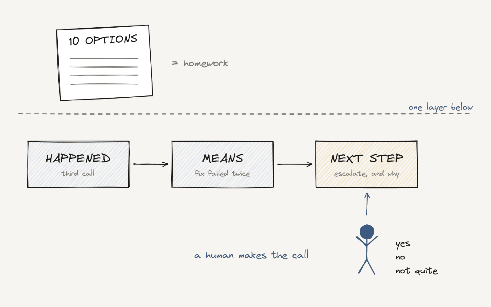

AI Decision Support: Better Answers Are Not Enough

We got very good at AI that summarizes, answers and writes.
"The customer has contacted support three times about the same issue."
Useful. But it doesn't move anything forward. The person still has to figure out what to do.
From what happened to what to do next
A better assistant connects the dots:
- This issue keeps coming back.
- The usual fixes already failed.
- There is an open promise to this customer.
- This probably needs an escalation.
Then it suggests one next step, and says why.
Information tells you what happened. A recommendation helps you decide what to do about it.
Recommendations need design, not just a model
A list of ten possible actions is not a recommendation. It's homework.
A good recommendation weighs business rules, customer impact, cost and how sure it is. And it shows its reasoning simply enough that a person can say "yes," "no," or "not quite."
Sometimes the right recommendation is "go ahead." Sometimes it's "ask for more information" or "bring in an expert." An AI that never says "I'm not sure" is not confident. It's careless.
This is where product managers earn their seat. Before the model, a few things need to be clear:
- Which decisions AI should recommend, and which it should stay out of.
- What evidence a person needs to trust it.
- How to show uncertainty without creating noise.
- When a person approves, and when they can override.
- How to learn from what happened after the decision.
The goal is not to make AI sound smart. The goal is better decisions, more often, with less effort.
And this connects back to the human option. When a person takes over a case, a good recommendation is the difference between "let me look into this" and "here's what we're going to do."
The next step for AI assistants is not better answers. It's better decision support.
The best starting point is a decision your team makes many times a day. If AI can't recommend it with a clear "why," that gap tells you what to build next.